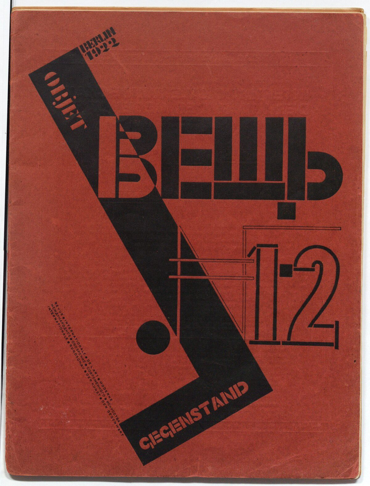

References / Editorial / 375
Veshch/Gegenstand/Objet cover, issue 1–2
El Lissitzky’s cover for the trilingual Berlin review builds its title from stencil-like black letters and a steep black bar with a circle, all printed on red.
- Source
- Wikipedia: Veshch'/Gegenstand/Objet
- Creator
- El Lissitzky (cover); El Lissitzky and Ilya Ehrenburg (editors)
- Made
- 1922 (issue 1–2, March–April 1922, per Wikipedia)
- Style
- Constructivism (agent-proposed, not yet reviewed by a person)
- Moods
- Architectonic, declarative, international
- Evidence
- Downloaded and inspected the cover image on Wikimedia Commons (1218 × 1600 px, viewed at 1200 px). Commons credits the image to the Deutsche Nationalbibliothek and names the Mayakovsky Museum, Moscow, as the holding institution; no inventory number is given.
- Reviewed
- Rights
- Open license, stored. License: public domain. Rights policy

Context
Veshch’/Gegenstand/Objet was an international review of modern art published in Berlin by El Lissitzky and Ilya Ehrenburg in 1922. Its title gives the word for “object” in Russian, German, and French. Issue 1–2 appeared in March–April 1922 and issue 3 in May 1922; there were no further issues. Wikipedia.
Commons describes the print technique as zinc printing (Zinkdruck). Commons.
Observed
- The whole cover is a flat, slightly mottled red. All type and shapes are printed in black.
- A thick black bar runs steeply from the upper left to the lower center and turns at its foot into a short horizontal. “OBJET” runs along it, reading upward, and “GEGENSTAND” sits in the foot, both in red letters reversed out of the black.
- “ВЕЩЬ” is set in large black letters built from bars and blocks, with stencil-like gaps. The letter В is doubled by an offset shadow.
- The issue number “№ 1·2” is drawn in outline and solid strokes with thin rules that cross the black bar.
- A solid black disc sits beside the foot of the bar. “BERLIN 1922” is stacked at the top of the bar in small heavy letters.
- A small stepped block of text in three languages runs diagonally at the lower left.
Why it belongs
The cover uses the same vocabulary as Beat the Whites with the Red Wedge, a diagonal bar and a circle, but turns it into a masthead. The letters are drawn as constructions, not set from a font.
The red ground covers the whole cover, so the measurement finds 69% chromatic area, above the website fingerprint’s maximum of 0.6. Print covers and posters by Klutsis show that a full red field belongs to the style.
Borrow
Print black type and shapes on a full red ground for a cover or hero, and reverse small labels out of the black shapes in red.
Run the secondary title words along the edge of a steep bar.
Measured
Machine-extracted by tools/image-traits.py on . Full measurement.
- Mean chroma
- 0.28
- Palette
- #91372c 41%
- #9d4b3e 25%
- #292121 18%
- #f1f3f3 5%
- #672d27 2%
- #191616 1%
- #a65949 1%
- #3e2320 1%

